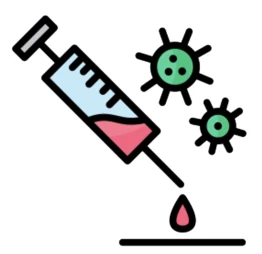
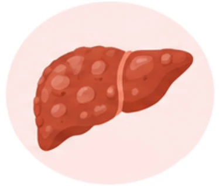

O vírus da hepatite C (HCV) é um vírus envelopado com cerca de 70 nm de diâmetro. Possui um genoma de RNA de fita simples com polaridade positiva que é envolto por um capsídeo de simetria icosaédrica. O HCV pertence à família Hepaciviridae e ao gênero Orthohepacivirus; a espécie é denominada de Orthohepacivirus hominis segundo o ICTV.
Seu genoma possui cerca de 9,4 kb com uma única ORF que será traduzida em uma única poliproteína com cerca de 3 mil aminoácidos. Essa poliproteína será posteriormente clivada para gerar as dez proteínas virais necessárias para a replicação do HCV e montagem de novas partículas virais.
O HCV possui três proteínas estruturais: as glicoproteínas do envelope viral chamadas de E1 e E2, necessárias para reconhecimento celular e entrada nos hepatócitos; e a proteína do capsídeo viral ou core. Além de sete proteínas não estruturais, que vão desempenhar diversas funções no ciclo viral: p7, NS2, NS3, NS4A, NS4B, NS5A e NS5B. Dessas, destacam-se as proteínas a seguir por serem alvos das terapias com os antivirais orais de ação direta (DAAs):
Possuem a função de serina-protease realizando a maioria das clivagens da poliproteína viral.
Conteúdo a definir.
Conteúdo a definir.
A falta de correção de erros pela RNA polimerase durante a replicação do HCV resulta em uma elevada taxa de mutação, que resulta em ampla diversidade genética. Atualmente são reconhecidos oito genótipos de HCV, nomeados por números de 1 a 8, além de mais 90 subgenótipos, que estão distribuídos de maneira distinta pelas regiões geográficas. Os genótipos e subgenótipos do HCV podem influenciar na evolução clínica da doença hepática e eram muito importantes para predizer a resposta terapêutica aos antigos protocolos baseados em interferon ou interferon peguilado (Peg-INF) com ou sem ribavirina (RBV).
Historicamente, indivíduos que adquiriram a infecção pelo genótipo 1 do HCV, por exemplo, apresentavam taxas de resposta virológica sustentada (RVS) em torno de 50% com a utilização de Peg-INF+RBV, enquanto nos infectados pelo genótipo 3, a RVS podia chegar a 80% com o mesmo esquema terapêutico. Atualmente, os DAAs apresentam elevada eficácia contra os múltiplos genótipos do HCV, sendo considerados pangenotípicos e dispensando, na maioria dos casos, a genotipagem viral para início do tratamento.
A elevada variabilidade genética representa um dos principais desafios para o desenvolvimento de vacinas eficazes.
As diferenças genéticas e antigênicas do vírus favorecem mecanismos de escape imunológico, dificultando uma resposta protetora ampla e duradoura, capaz de conferir proteção contra todos os genótipos virais. Sendo assim, a imunidade adquirida após a cura por um genótipo do HCV não garante proteção completa para os demais.
A principal via de transmissão do HCV é a sanguínea, conforme apresentado a seguir.
O HCV pode ser transmitido por contato com sangue e outros fluidos derivados do soro contaminados.
O compartilhamento de objetos perfurocortantes de uso pessoal, como agulhas, seringas, alicates, lâmina de barbear, entre outros objetos perfurocortantes contaminados, favorece a transmissão do vírus.

Os usuários de drogas injetáveis são um grupo com maior vulnerabilidade à infecção pelo HCV, devido ao compartilhamento dos materiais para aplicação da droga.
Procedimentos médicos, odontológicos e estéticos que não atendam às normas de biossegurança, incluindo colocação de piercings e confecção de tatuagens. Destaque para o risco de exposição ocupacional de profissionais da saúde em acidentes com material contaminado.
A transmissão sexual ocorre por contato com sangue, sêmen ou secreções vaginais de uma pessoa infectada durante as relações sexuais.
A transmissão pode ocorrer da mãe para o filho durante a gestação ou, principalmente, no momento do parto, quando o recém-nascido entra em contato com sangue e secreções maternas contaminadas.
Embora não seja considerada uma infecção sexualmente transmissível, dados do Boletim Epidemiológico das Hepatites Virais do Ministério da Saúde têm observado aumento nas notificações por transmissão sexual como possível fonte de contaminação ao longo dos anos.
A hepatite C pode manifestar-se na forma aguda ou evoluir para a forma crônica, dependendo principalmente de fatores como:
Indivíduos adultos apresentam maior probabilidade de cronificação, assim como indivíduos imunossuprimidos (como aqueles com coinfecção com HIV, pacientes em terapia renal substitutiva e pacientes oncológicos).
Observe o gráfico a seguir:
Nos 80% dos casos de desenvolvimento da forma crônica, com dano hepático progressivo, em 15% a 20% desses casos pode ocorrer cirrose em 10 a 30 anos; e entre 1% e 5%, pode haver desenvolvimento de
Os sintomas são pouco frequentes na fase aguda e, quando presentes, estão associados a maior chance de resolução espontânea da infecção.
Clique nos cards a seguir e entenda cada tipo de infecção.
Conteúdo a definir.
Conteúdo a definir.
Neste tópico, você conheceu as formas de evolução da hepatite C, da fase aguda à cronificação, incluindo a possibilidade de resolução espontânea e de progressão para cirrose e carcinoma hepatocelular. No próximo tópico serão abordados o diagnóstico da hepatite C e os principais exames utilizados para identificar a infecção.
Não existe um marcador sorológico isolado capaz de diferenciar com precisão a fase aguda da fase crônica da infecção. A distinção baseia-se principalmente na história clínica, no tempo de exposição e na dinâmica da carga viral.
Após análise do gráfico, entenda as duas fases a seguir.
Fase aguda
Durante a fase aguda da infecção pelo HCV os anticorpos anti-HCV surgem entre 7 e 12 semanas após a infecção, já o HCV-RNA pode ser detectado precocemente, entre 2 e 14 dias após a exposição. Devido ao período da janela imunológica, em que não há a produção de anticorpos em quantidades suficientes para serem detectados pelos testes, um resultado não reagente para anti-HCV não exclui infecção recente; nesses casos, é fundamental investigar a presença de HCV-RNA em indivíduos com história de exposição recente. Ainda na fase aguda da hepatite C, flutuações da carga viral (>1 log10) são frequentemente observadas entre 12 e 24 semanas após a infecção em amostras seriadas. Podem ocorrer períodos transitórios de indetectabilidade viral seguidos de nova positividade. Sendo assim, recomenda-se a realização de quantificação seriada do HCV-RNA para melhor avaliação da evolução da infecção, conforme orientações do PCDT para Hepatite C.

Fase crônica
Durante a fase crônica da infecção pelo HCV, o anti-HCV se encontra estabelecido; no entanto, em indivíduos imunossuprimidos, os níveis de anticorpos podem ser reduzidos ou tornar-se indetectáveis temporariamente, podendo reaparecer posteriormente, o que pode gerar dúvida diagnóstica quanto à fase da infecção. Nessa fase, o HCV-RNA também tende a apresentar maior estabilidade, com flutuações da carga viral geralmente < 1 log10.
O diagnóstico da infecção pelo HCV é realizado pela detecção de anticorpos anti-HCV, de antígenos e/ou do genoma viral em amostras de sangue total, soro ou plasma.
O Manual Técnico para Diagnóstico das Hepatites Virais recomenda a utilização preferencial dos testes imunocromatográficos (testes rápidos - TR) ou, alternativamente, de imunoensaios laboratoriais, como a eletroquimioluminescência, para a detecção do anti-HCV, que indica contato prévio com o HCV e não diferencia uma infecção ativa de uma infecção passada pelo vírus. Já a detecção de antígenos virais ou do RNA do HCV, principalmente, vai indicar a infecção ativa e pode ser realizada por imunoensaios e testes moleculares (PCR), respectivamente.
De maneira geral, o fluxo de diagnóstico da hepatite C se inicia com a utilização de um teste para detecção do anti-HCV (TR ou imunoensaio). Nesse contexto, há dois cenários:
Os TR anti-HCV estão amplamente disponíveis na rede do SUS e compõem uma ferramenta importante para a ampliação do acesso ao diagnóstico da hepatite C, uma vez que o resultado é obtido em minutos e não necessita de estrutura laboratorial. Além disso, o SUS possui uma rede de laboratórios para a realização dos testes de carga viral (PCR quantitativo), necessários para a conclusão diagnóstica da infecção e acompanhamento da resposta ao tratamento antiviral.
Como citado anteriormente, devido à característica pangenotípica do tratamento com os DAAs, não é mais necessária a realização da genotipagem do HCV para fins de diagnóstico.
Mais informações sobre o diagnóstico da hepatite C estão disponíveis no Manual Técnico de Diagnóstico das Hepatites Virais, publicado pelo Ministério da Saúde. Confira também o PCDT - Protocolo Clínico e Diretrizes Terapêuticas de Hepatite C e Coinfecções.
Como não existem vacinas contra o HCV, as formas de prevenção estão associadas a medidas que dificultem as cadeias de transmissão, evitando, principalmente, contato com sangue contaminado, conforme a seguir:
Ao longo desta aula você conheceu os principais aspectos relacionados à hepatite C, desde as características do vírus e suas formas de transmissão até a evolução da infecção e o diagnóstico laboratorial. A compreensão desses elementos é importante para reconhecer e acompanhar a infecção por HCV. Na próxima aula, o estudo terá continuidade com a hepatite D, abordando suas características, formas de transmissão, história natural e aspectos diagnósticos.